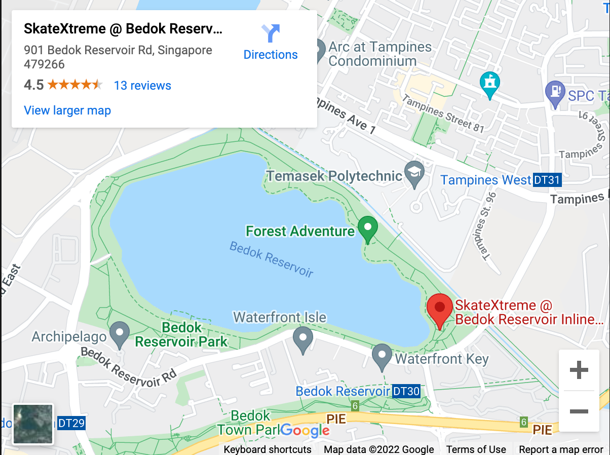

Bedok Reservoir Park is one of the best cycling routes in Singapore, suitable for everyone as the trail is just 2.5 km long. The path is a mix of pebbly tracks and well-paved flat surfaces. Cycling here is very simple, and one can learn here with a lot of ease and comfort.
Circut of Bedok Reservoir Park
LocationAlong Bedok Reservoir Road, North of Bedok New Town, Singapore
Bicycle Rental @George Bicycles PTE LTDAddress: 740 Bedok Reservoir Rd, Singapore 470740
Opening Hours: 10am-10pm, Mondays to Sundays
Contact Number: 6244 4057
Address: 901 Bedok Reservoir Road, Singapore 479266
Opening Days: Saturday & Sunday
Opening Hours: 10.30am-12pm, 2pm-3.30pm, 3.30pm-5pm, 5pm-6.30pm
Contact: Haggai Ngiam @8763 2165
Google Map Location
